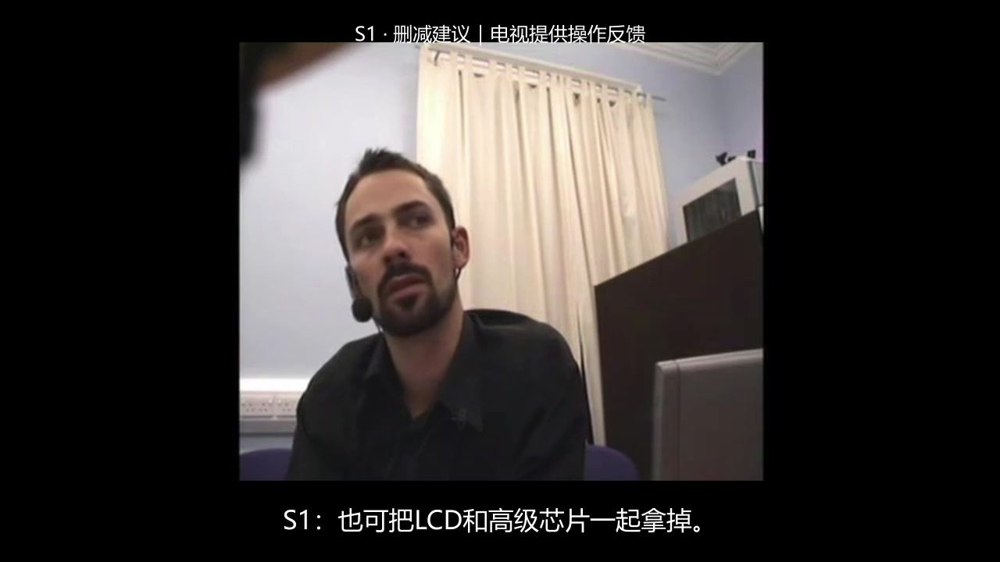
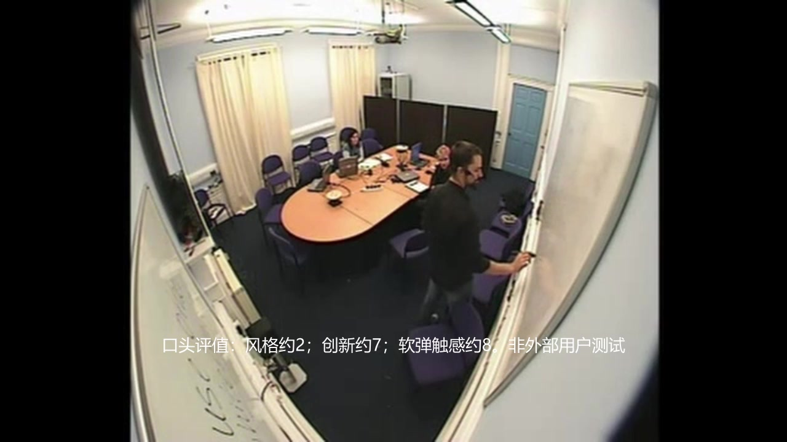

gpt-6-luna
38.67 / 100
内容 11.67/50 · Omni 17.50/40 · 工程 9.50/10
355.00秒成片 · 有效用时16.12分钟 · 38次API / 38次工具
先学习官方 Fairlight 教程，再操作本地 DaVinci Resolve：把约44分钟的多机位真实会议，剪成一份5–6分钟的中文信息简报。让缺席者看懂决定如何改变，也看懂仍未消除的分歧。
Agent扮演会议纪录片剪辑师。保留英文原声，以中文关键字幕、人物署名与简短图卡组织信息。可按主题重排，但必须区分原始计划、临时建议、否决备选、最终结论与保留意见。
| 要求 | 编辑问题 | 必须完成的工作 |
|---|---|---|
| P1 | 方案演变 | 区分上次计划、本次原型与最终配置；解释显示反馈、芯片和供电变化及原因。 |
| P2 | 成本与取舍 | 交代报价、需节省金额、当场纠错与预算结论；区分外形备选、按钮计价、局部配色和中途余额。 |
| P3 | 原型与使用性 | 解释原型扁平外观、预期厚度、讨论中的尺寸估计，以及布局创新与熟悉性取舍。 |
| P4 | 评价与保留意见 | 准确解释量表方向、纠错和三项评价；保留对配色受欢迎程度的疑虑。 |
| P5 | 未通过构想 | 交代评价后形态与色系提案的状态，不把提议升格为已批准决定。 |
| P6 | 创意限制与澄清 | 保留空间词义误会及澄清、具体约束冲突、设备影响与氛围纠正。 |
| P7 | 不同立场 | 保留领导/控制与结构化的不同说法、反驳与让步；说明会外交流、合作评价和限时例外。 |
| P8 | 晚出现的信息 | 完整检查结尾，保留第一次宣布收尾后仍出现的触觉与实体原型方法反思。 |
| P9 | 跨模态证据 | 人物、原声和署名对应；跟踪离座/换座，呈现真实白板与厚度手势，保护抢话、否定和同期关系。 |
| P10 | 专业交付 | 实际用本地Resolve编辑并导出，交付可编辑工程、成片、混音与可追溯来源映射。 |
必须实际在本地Resolve创建、编辑和导出。允许原生脚本、GUI及FFmpeg、ASR、Python辅助检索；不得把外部完成的整片导入，伪装原生编辑。不得生成声音、补写对话、替换面孔或伪造反应。
final.mp4、project.drp、mix.wav、edit_map.json、claims.json、speaker_map.json、README.md。成片300–360秒、720p25、H.264/AAC48k；混音PCM48k，−18±2 LUFS、真峰值≤−1 dBTP。新增音画映射偏差不超过2帧。
素材是AMI研究中真实录制的角色扮演设计会议，不是自然发生的商业发布会。上游低清不扣画质分；不能从模糊白板编造精确数字。正式受测输入不包含人工转写、答案、评分结果或另一模型交付。
同一场会议的五路录像、四路耳麦及官方混合轨。源画面352×288、25fps；音频约43分44秒，各视频尾部时长稍有不同。所有会议内容来自开放语料，没有生成样品或人工植入故障。
真实源片段 1080–1092秒，五路预览使用相同源时间；试听副本仅做增益适配，原始WAV见下方下载。
| 原始文件 / 官方直链 | 大小 | SHA256前16位 |
|---|---|---|
| ES2002d.Headset-0.wav | 84.0 MB | 26f18390d64f5870… |
| ES2002d.Headset-1.wav | 84.0 MB | 81c33b49a1365d77… |
| ES2002d.Headset-2.wav | 84.0 MB | 131d3ecbfa4ab828… |
| ES2002d.Headset-3.wav | 84.0 MB | f6305325f962846c… |
| ES2002d.Mix-Headset.wav | 84.0 MB | b8e0c2d0df9fccfc… |
| ES2002d.Closeup1.avi | 75.3 MB | 9c353b206a62e2f3… |
| ES2002d.Closeup2.avi | 92.7 MB | 802567b658e3516e… |
| ES2002d.Closeup3.avi | 119.2 MB | d212372c953a72b8… |
| ES2002d.Closeup4.avi | 82.7 MB | 6b359629d45083c0… |
| ES2002d.Corner.avi | 64.1 MB | e78f1160be777ee3… |
输入清单包不含大媒体；可从官方链接获取完整输入。任务使用提供的H.264兼容副本进行Resolve操作，保留时间原点与原尺寸。获取与转换说明
新增 gpt-6-astra 测试：接口预检通过，等待在Resolve中启动新版桥接；尚未开始正式评测。沿用同一题目、素材、工具和预算。GLM 5.3、Kimi K3 Pro 暂未在原接口模型列表中找到，尚无可用ID。Opus因认证失败未运行，本次已按用户要求改测Astra。未运行的模型均不计0分。查看预检状态与比较协议 →
两模型各完成一次有效运行及七项交付。以下视频是实际提交的网页播放副本；画面重新编码便于加载，音频流直接复制，时间线不改。原始交付哈希及网页副本哈希见媒体清单。
内容 11.67/50 · Omni 17.50/40 · 工程 9.50/10
355.00秒成片 · 有效用时16.12分钟 · 38次API / 38次工具
内容 45.83/50 · Omni 27.50/40 · 工程 10.00/10
357.28秒成片 · 有效用时76.30分钟 · 109次API / 108次工具
本地DaVinci Resolve 21.1.2.10免费版；原生脚本桥接。每模型90分钟有效预算、160次工具/200次API尝试，reasoning=high。图像由真实解码帧提供，声音通过离线faster-whisper base.en及PCM信号工具观察；本轮不等同于端点原生音频理解测量。
Sol首次导出因显存不足导致Resolve崩溃，恢复同一工程和请求继续；约19分47秒等待不计有效预算，失败渲染耗时仍计入。恢复过程没有改剪辑或提供编辑提示。两份DRP都经独立导入、重链接和原生重渲染核验。上游模型身份以代理返回名称为准，未独立认证权重身份。
检索策略差异：Luna的混合轨ASR覆盖1200/2624.16秒，仅看7张会议全景，未抽看实际成片；Sol扫完整混合轨、观察112张源会议帧和33张成片帧。更多观察仍未消除局部错署名。查看覆盖、预算与五阶段轨迹分析 →
下面摘取实际工具日志中的节点；操作理由是模型当时提供的可见字段。完整轨迹包含参数、返回、时间、错误和实际观察帧，没有补写内部思考。
内容24项共50分；Omni11项共40分；工程4项共10分。人物身份、发言归属与离座跟踪占18分，核心错署名按独立事件扣8分。相同事件不因标题、字幕和附件重复写错而多次罚分。

57.48–68.88秒，A提出删LCD与高级芯片，片中却署名S1=C并配C近景。O02一次扣8分；配置事实仍正确，全局四人映射与离座跟踪也有证据，不连带清零。

临时代号未建立完整人脸/声音对应，多个长段近景与主声音关系不清；将汇总中的数字当成单项得分，且量表方向译错。白板真实画面本身仍有视觉分。
音画同步：Luna新增源时钟差0帧，Sol最大1帧，均满足≤2帧。响度与峰值：Luna−21.99 LUFS / +0.03 dBTP未达标，Sol约−19.15 LUFS / −1.51 dBTP达标。没有把人物拍错当作时间偏移重复扣分，也没有把信号测量等同于人耳完整验收。
AMI Consortium / AMI Meeting Corpus · ES2002d · CC BY 4.0。会议片段与截图均来自真实录制材料。模型交付为edited excerpts，中文图卡由模型编辑。官方Fairlight教程从原发布方获取。